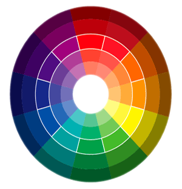
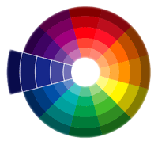
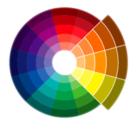
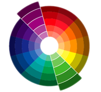
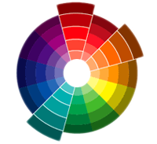

The use of Colour to create Emotional Impact
When designing for the web, one fundamental aspect of the design is colour. Choosing colours without thought could discourage users from the site whereas picking the right colours can benefit design and determine how the user responds and interacts.
Colour theory is based on the idea that objects have no colour but gain the appearance by absorbing or reflecting parts of the visible spectrum. How the eye works is also vital to the understanding of how colour exists and is perceived.
We perceive colour through receptors at the back of our eyes. They translate the different wavelengths of light reflected from surfaces into distinctive stimuli that our brain converts into red, green, blue and other colours. So the eye sees light and the brain interprets it and identifies the colour. But it does more than just identify: it makes some judgements based upon basic human instincts, and other learned information, including culture, human experience, fashion and nature amongst other sources. Colours produce different reactions depending on how it is perceived by the eye and translated by the brain.
Sight is the most valuable sense in an online setting and colour used in Web design can influence brand recognition as well as engage and inform visitors. Over 80% of visual information is related to colour. (Morton, J. n.d.)
"Colours also convey messages that go beyond ethnic, racial, or gender boundaries. " (Morton, J. n.d.)
Different people and different demographics have different emotional responses to colour depending on the age of the user and context of the colour. In simple terms, a target audience of young teenagers will generally respond more positively to a web site with vibrant and energetic colours. On the other hand, an older audience will respond better to a web site with calm colours.
According to a survey made by Cooper Marketing Group, Oak Park, IL, "Power is represented by the color red for 25% of respondents, black for 17% and blue for 13%. More than 55% of those surveyed chose one of these three colours out of 100 colours. Fragility was most represented by pale pink (27%), white (9%), and pale lavender (9%)." (Lamancusa, K. 2003)
Colour Wheel

Image 1 - Colour Wheel
Colour wheel is a visual representation of colours arranged according to their chromatic relationship. There are primary colours: red, yellow and blue, mixing others cannot create these colours. Secondary colours: orange, green and violet, these colours are achieved by a mixture of two primaries. Mixing a primary colour with the secondary colour nearest to it on the colour wheel produces a tertiary colour: red-orange, yellow-orange, blue-green, blue-violet, and red-violet.
Colour Combinations
The psychology of colour plays a significant role in creating a successful web site. It is not just to make the website look pleasing, but also used to deliberately evoke certain emotions from the user.
Selecting colours cleverly ie. taking into account the audience and purpose of the website, may mean that the web site provides a more meaningful experience to the user. Adding textures can alter colours - a roughly textured surface makes a colour seem darker, while a smooth surface lightens the same colour.
Knowledge of colour, its psychology and symbolism, is fundamental in the design of colour scheme. There are different types of colour combinations:

Image 2 - Monochromatic colour combination
Monochromatic colour schemes use only one colour. Different values of the respective colour can be used to create the impression of different colours. Monochromatic colour schemes are harmonious and peaceful. Using only one colour creates unity and can help to join elements together.

Image 3 - Analogous colour combination
Analogous colour combinations use colours that are related, but not the same, to create visually appealing schemes. A selection of blues and purples, or reds and oranges create an analogous colour scheme. Two or more colours can be used in an analogous colour scheme, however, one colour is often used as a dominant colour while others are used to highlight.

Image 4 - Complementary colour combination
Complimentary colours or contrasting colours are colours that are located on opposite sides of the colour wheel. Using complementary colours helps to ensure that the user doesn't have to work too hard to read or find what they are looking for. For example, yellow and purple or red and green are complementary colours.
Many web sites use white colour as a default background and black as readable colour text. Other backgrounds that work well for web sites are dark blue, dark grey and black, with white being the most readable text colour. Orange text on a blue background is very difficult for the user to read. A lighter orange, almost cream, and dark blue background is much more readable and still a contrasting combination.

Image 5 - Triadic colour combination
Triadic colour combinations consist of three opposite colours. Red, yellow, and blue is a triadic colour scheme. Like complementary colour combinations it is not necessary to use a strong value. Using a low value of one or more colours can help create a more harmonious and accessible web site.
Emotional Impact
These are some main points of what emotional impact colours can have on users.
WARM COLOURS:
Image 6 - Warm Clours
Yellow is the colour of comfort, liveliness, stamina and happiness. It is a vibrant colour that could be used to highlight desired spheres on a web page. Yellow can also be linked to hazard, hope, friendliness and finances. Yellow can be used to highlight sections on a webpage and, combined with black, can create a warning feeling.
Red is associated with passion, desire, courage and strength. The colour red is also a very evocative colour and conjures up images of hell, fire and warning. Red is a strong colour that attracts the user’s attention to a certain area.
Orange is the colour of vibrancy, heat, fire and efficacy. As a warm colour, orange is a friendly and young colour that is often used to target youth audience. Orange is also related to spirituality and healing. It’s the colour that represents Buddhism and is believed to have a calming energy. It’s a confident colour that is not as lively as yellow or as fiery as red.
NEUTRAL COLOURS:
Image 7 - Neutral Colours
White is a minimalist colour. It’s associated with simplicity, cleanliness and purity, and can be used effectively to highlight images. White is extremely popular in design web sites like interior design and graphic design. It can create a feeling of space and balance and is linked to peace and light. White conveys an impression of style and indicates that the content of the site is strong enough to stand alone without any strong visual aid.
Black is a strong colour and is associated with sexiness, intensity and elegance. It is also associated with power and mystery. It is a very famous colour on photography web sites, as black creates contrast with colours in photos. The colour black is an extremely popular colour for backgrounds because it contrasts and shows off other colours very well. Black can be also related to death and mourning. Heavy metal music web sites often use black as their main colour due to its connections with death and evil.
Grey can be an unusual colour choice as it is not as strong as black or white and used alone is associated with dullness, although it can be used to create stylish and calm web sites. It is used in fashion, design and technology web sites. Grey is mainly used to compose shiny gradients to give a professional, elegant feel to a web site. Grey can be also associated with elegance, innovation and the future.
Brown is similar to green in the fact that it is also related to trees, mother earth and calm. Particularly the lighter tone of brown can be very soothing. The colour brown is also associated with tradition, stability, depth and character.
Beige is also a popular colour in web design as it provides an earthy and relaxed feel. It can also mean tradition, poverty and nature.
COOL COLOURS
Image 8 - Cool colours
Green is related to the environment. It is also a good colour to create a calm and relaxed website. It is associated with nature, envy and wealth.
Blue is linked to strength, water and harmony. It is also associated with depression, coldness and confidence. Blue can be used in web design to create a cool and clinical effect.
Purple is a combination of blue and red. It has the highlights of red, but holds more vibrant properties of blue. Purple is not a very well known colour in web design, as it is seen as quite feminine and can give the impression of arrogance, wealth, luxury and indulgence. It is also linked to royalty, romance and wisdom.
Note: Web design consists in only 216 colours. This reasons is from the fact that Mac and Pc computers use different colour palettes. However, they have 216 colours that are common to both. These colours are considered “Web safe”. Using these “web safe colours” means that the web site will look quite consistent in different computers.
Evaluation
Colour has both a positive and negative emotional impact on viewers and there are no rules regarding "good" or "bad" colours since the response to colour is personal. Choosing the colours that will best motivate and engage your target audience is key to increasing the traffic of a web site. Given the general emotional responses to different colours, as described in some detail above, it is essential that colour combinations are considered when looking at the purpose and audience of a website.
Colour, like most mediums, is also influenced by fashion. For example, contemporary combinations such as vibrant pink/black have become increasingly fashionable in popular media whereas combinations of yellow/orange/brown hues make reference to fashions of the seventies and used in a contemporary setting can convey a retro feel.
Colour cannot however be considered without considering other visual aspects such as typography, line, form and pattern concurrently. Together, these form a coherent and considered approach to user response and can make or break the success of a website.
References
Arruda, W. August 3, 2004, TRUE COLORS - Using Color to Build your Brand [online], Available from: http://www.marketingprofs.com/4/arruda13.asp?sp=1 [Accessed: 18.12.2008]
Hallock, J. 2003, COLOR ASSIGMENT - Psychology - Colour Psychology [online], Available from: http://joehallock.com/edu/COM498/psychology.html [Accessed: 18.12.2008]
Lamancusa, K. 2003, CREATIVE LATITUDE - Emotional Reactions to Color [online], Available from: http://www.creativelatitude.com/articles/articles_lamacusa_color.html [Accessed: 11.12.2008]
Morton, J. n.d., COLOR MATTERS - Business, Marketing and Trends - Who Owns Hue? [online], Available from: http://www.colormatters.com/color_trademark.html [Accessed: 18.12.2008]
Morton, J. 2000, COLOR MATTERS - Business, Marketing and Trends - Quirks of the Clor Quest [online], Available from: http://www.colormatters.com/chatquest.html [Accessed: 18.12.2008]
Morton, J. 2005, COLOR MATTERS - Business, Marketing and Trends - Why Color Matters [online], Available from: http://www.colormatters.com/market_whycolor.html#psych_research [Accessed: 18.12.2008]
Varey, A. Smyth, M. 2008, IMD090108 EXPERIENTAL DESIGN - Unit 7: Colour [online], Available from: http://vista.napier.ac.uk/webct/cobaltMainFrame.dowebct [Accessed: 18.12.2008]